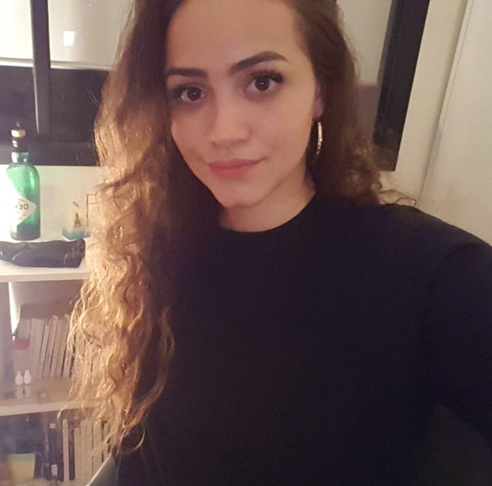

Salut, moi c'est Sofia 🐰

Présentation 👋🏽
Je suis née le 19/01/1995, j'ai 24 ans 🎈
J'étudie à l'INSEEC Business School en Master Stratégie et Marketing Digital 🎓 à Lyon 📍
📝 sofia.brousse@gmail.com
J'aime 💜: le digital 💻 / le cinéma 📽/ le piano 🎹/ l'art 🎨 / la cuisine 🍽 / voyager 🚀
Formations 📚
2017-2020
INSEEC SCHOOL OF BUSINESS & ECONOMICS parcours grandes écoles
Master Marketing Digital - Campus de Lyon
Mars-Juillet 2019
Semestre universitaire au Pérou
Universidad San Ignacio de Loyola - Lima
2015-2017
IUT GEA (Gestion des Entreprises et des Administrations)
DUT option Gestion Management et Organisation – Limoges (87)
Expériences professionnelles 📈
Depuis Septembre 2019 : Confluent Digital - Traffic Manager - Cursus en alternance | Lyon(69)
• Mise en place, diffusion et optimisation des campagnes publicitaires sur divers leviers webmarketing (coregistration, cosponsoring, etc…)
• Suivi des statistiques et reporting quotidien de la performance des campagnes
• Gestion des budgets clients dans le respect de la stratégie d'acquisition globale
Janvier 2018 – Mars 2018 : Kantar Sofres – Enquêteur | Lyon (69)
• Mener des entretiens téléphoniques
Avril 2017 – Aout 2017 : Crédit Agricole – Responsable d’accueil | Ambazac - Bellac (87)
• Réaliser un fichier client pour mettre en place une mission de prospection
• Organiser la journée prospection (affiche, prestataires, intranet, emailing, préparation des courriers et itinéraires)
• Réaliser les opérations courantes d’accueil (phoning, prise de rendez-vous, organisation des planning, commandes, assistance clients, mise à jour des fichiers clients)
Février 2014 – Novembre 2017 : Mezzo Di Pasta – Equipier polyvalent | Limoges (87)
• Effectuer les opérations courantes de caisse
• Effectuer les commandes de stock
• Fermeture/ouverture du magasin et mise en place des différents services
Activités 📝
Aujourd’hui : INSEEC BUSINESS SCHOOL | Lyon (69)
Secrétaire de l’association Lyon Kids’ Humanity
• Mettre en place des événements et créer du contenu via les réseaux sociaux
• Réaliser, mener et effectuer les rapports de réunions
• Prendre contact avec les différentes associations et partenaires
Stage Humanitaire | Association Gawad Kalinga – Philippines
• Venir en aide au population locale en réalisant une mission dentaire au sein d’un village
• Trouver des prestataires et négocier les prix pour les dépenses liées à la mission dentaire et aux différents achats pour améliorer le quotidien des habitants
Septembre 2016 – Mars 2017 : IUT GEA| Limoges (87)
Rédactrice du Journal, Mon Petit GEA
• Mettre en page le journal et rédiger les rubriques « Bons Plans », « Actualités » et
« Culture »
• Prendre contact et trouver de nouveaux partenaires pour l’élaboration du journal
(impression couleurs, réductions étudiantes, espaces publicitaires)
Suivez-moi sur les réseaux 🔮